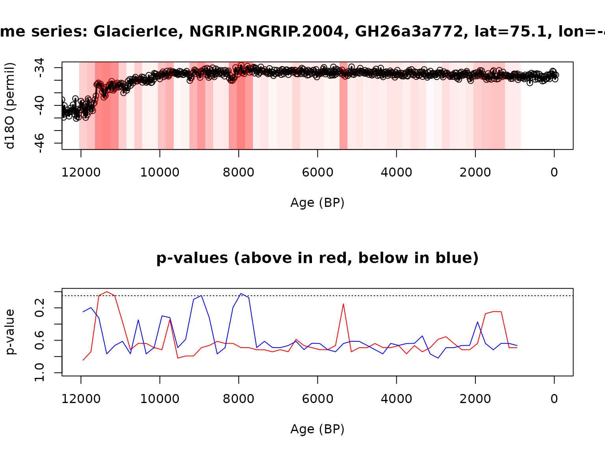

detectExcursionSlidingWindow.RmdThis (in development) vignette will showcase a simple example of
detecting an excursion – defined in actR as a short term deviation from
a baseline – using the classic NGRIP d18O record. This dataset comes
preloaded in actR, and you can learn more about it with
?ngrip.
actR uses an excursion detection algorithm developed and used by Morrill et al. (2013).
library(actR)First, let’s take a look at the excursion in the NGRIP d18O dataset
near 8200 yr BP (the 8.2 ka event). First, we’ll tell it not to simulate
any uncertainties. We’re using the detectExcursion()
function, a high-level function for this approach.
We’ll need to give it some key parameters, in this case, we need to define the center and width of the event window (8200 and 200 yr, respectively). We also need to define the reference intervals (400 yrs on each side), and how many standard deviations to use for the baseline (sig.num = 2). We’re only looking for cold (negative excursions).
#setup parallel computing
future::plan(future::multisession,workers = 4) #this will run in parallel
#future::plan(future::sequential) # change to this if parallelization is causing problems
#to avoid some warnings
options(future.rng.onMisuse = "ignore")
eventWindows <- rnorm(50,mean = 500, sd = 100)
slidingResult <- detectExcursionSlidingWindow(ngrip,
vals.variable.name = "d18O",
event.yr = seq(1200,12200,by = 200),
event.window = eventWindows,
ref.window = eventWindows,
sig.num = 2,
exc.type = "either",
n.ens = 10,
null.hypothesis.n = 20,
simulate.time.uncertainty = FALSE,
simulate.paleo.uncertainty = FALSE)
#> Selected d18O
plotExcursionSliding(slidingResult)
Get a vector of all the points ever found as a cold excursion
allColdEventPoints <- getAllExcursionTimes(slidingResult, exc.type = "Below")And plot it